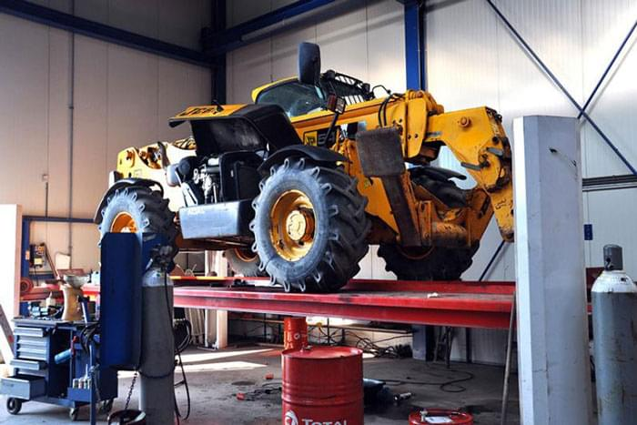
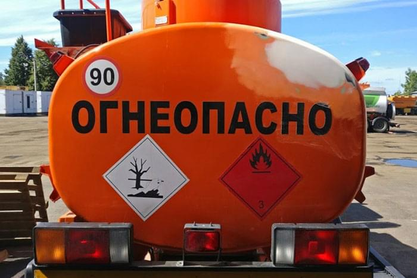

Лучшие условия пескоструйной обработки
- Более 10 лет опыта Мы собрали лучших мастеров пескоструйной обработки, знающих своё дело на 100%
- Многопрофильный сервис Выполняем все работы- от демонтажа агрегатов и сварных работ, до нанесения корпоративного трафарета
- Большая рабочая площадка Польностью защищенное от пыли и ветра помещение, которое способно разместить даже БелАЗ-75710
Услуги пескоструйной обработки
Пескоструйная обработка спецтехники
Позволяет легко очистить поверхности от старого лакокрасочного покрытия, следов коррозии и грязи, остатков нефтепродуктов и других веществ. На обрабатываемый предмет подается воздушная струя с бразивными веществами под высоким давлением, которые разрушают поверхностный слой, не причиняя вреда конструкции.
Покраска спецтехники
Технология окраски таких больших и сложных изделий как спецтехника - неотъемлемая часть возможности их долгосрочной эксплуатации. Любая спецтехника, к которой относятся грузовики, экскаваторы, тягачи, самосвалы, катки и трактора, требует высококачественной окраски по всем своим эстетическим и защитным свойствам покрытия.
Пескоструйная обработка деталей
Восстановление и реставрация различных узлов и агрегатов требует их тщательной очистки – пескоструй способен обработать любой агрегат до блеска, удалив перед этим следы нефтепродуктов и застарелую грязь. Если на поверхности детали имеется коррозия, то она также может быть удалена всего за пару минут. После обработки металлические детали приобретают ухоженный вид и блеск.
Выездная пескоструйная обработка
Услуги пескоструя с выездом, наша компания осуществляет в кратчайшие сроки, решим все проблемы, связанные с очисткой от загрязнений, солевых отложений, нагара и ржавчины, снятия ЛКП и многое другое.
Пескоструйная обработка дисков
Колеса автотехники в большей степени подвержены негативному воздействию различных факторов, которые могут привести к появлению ржавчины на металлической поверхности диска, что чревато его дальнейшим разрушением. Пескоструй позволяет предотвратить появление следов коррозии: обработка может применяться не только для кованых, но и для разборных и штампованных дисков, а также литья.
Проделанные работы пескоструйной обработки
Пескоструйная обработка — это высокоэффективный метод очистки поверхности изделий от старой краски, коррозии, грязи, окалины, следов битума и других загрязнений, при помощи абразивных частиц, например песка.
Такая технология возвращает деталям блеск и новизну и значительно увеличивает срок их службы.
Так компаниям не нужно покупать новые детали, емкости, резервуары, строительные материалы.
Достаточно очистить старую поверхность от ржавчины, копоти, плесени и она вновь становится как новая.
Дополнительные услуги
Сварные работы
Современная спецтехника, используемая при выполнении сельскохозяйственных, дорожных, землеройных работ, для транспортировки грузов, эксплуатируется в сложных условиях, нередко подвергается повышенным нагрузкам.
Это становится причиной возникновения разного рода повреждений, требующих привлечения не только квалифицированных диагностов, автоэлектриков, слесарей, но и узкопрофильных сварщиков.
Слесарные работы
Изготовление крепежных деталей (болтов, гаек, шпилек, шайб), механическую обработку деталей после наплавки или сварки, растачивание тормозных барабанов.
Изготовление и растачивание втулок для восстановления гнезд подшипников, протачивание рабочей поверхности нажимных дисков сцепления/
Фрезерование поврежденных плоскостей и многое другое.
Восстановление проводки
Наиболее частые поломки связаны с панелью управления, под которой сосредоточены основные узлы.
Более всего уязвимы рычаги манипуляторов, кнопки и клавиатура. Они испытывают большую и постоянную нагрузку, что негативно сказывается на сроке их службы.
Наши автоэлектрики - лучшие в данной области!
Нанесение надписей
Мы предлагаем вам услуги по нанесению на различные на металлические и полимерные покрытия изображений трафаретной краской.
Такой вид нанесения изображений осуществляется при помощи трафарета и других специальных приспособлений.
Картинка получается яркой и износостойкой, качество проверенное годами!
Как мы работаем
- Приём заявки
- Расчёт стоимости
- Проведение работ
- Оплата по итогу
Пескоструйная обработка кузова
Прайс по восстановлению спецтехники
| Миксер | ||
|---|---|---|
| до 6 м3 | 89 000,00 ₽ | |
| до 12 м3 | 119 000,00 ₽ | |
| до 20 м3 | 169 000,00 ₽ | |
| Самосвал | ||
|---|---|---|
| до 8 м3 | 69 000,00 ₽ | |
| до 15 м3 | 89 000,00 ₽ | |
| до 20 м3 | 110 000,00 ₽ | |
| до 30 м3 | 138 000,00 ₽ | |
| до 40 м3 | 159 000,00 ₽ | |
| Автоцистерна | ||
|---|---|---|
| до 10 м3 | 95 000,00 ₽ | |
| до 15 м3 | 135 000,00 ₽ | |
| до 20 м3 | 175 000,00 ₽ | |
| до 25 м3 | 215 000,00 ₽ | |
| до 30 м3 | 255 000,00 ₽ | |
| до 40 м3 | 295 000,00 ₽ | |
Перечень выполняемых работ,
соответствующих стоимости в таблицах-
- 1. Демонтаж фонарей, крыльев, кронштейнов.
- 2. Защита уязвимых, и не подлежащих пескоструйной обработке, элементов.
- 3. Пескоструйная обработка доступных элементов кузова (установки или емкости), рамы и колесных дисков без узловой разборки.
- 4. Обеспыливание, обезжиривание и огрунтовывание обработанных поверхностей эпоксидным грунтом.
- 5. Покраска полиуретановой краской огрунтованных поверхностей в цвет одного RAL выбранного заказчиком.
- Спецтехника которая не указана в таблице рассчитывается после предварительного осмотра
- Дополнительные услуги такие как: сварные работы, расклейка, нанесение трафарета, демонтаж – монтаж сложных агрегатов или навесного оборудования, антикоррозийная (антигавийная) защита и др. оговариваются индивидуально после предварительного осмотра.